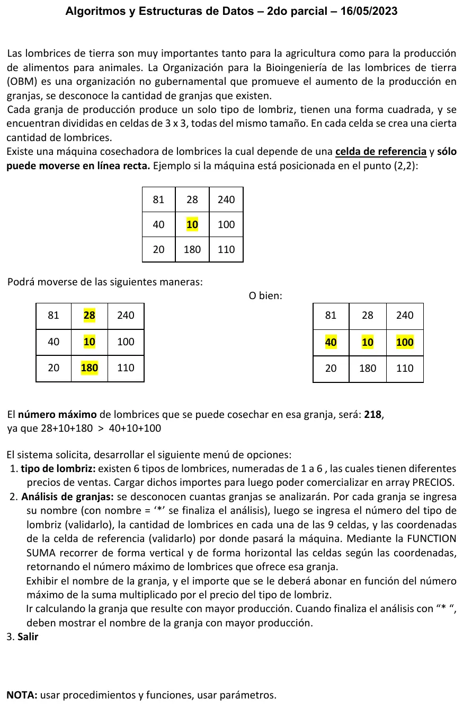

2° parcial, 16/05/2023 (Lombrices)
2° parcial, 16/05/2023
Enunciado


Propuesta de respuesta
Respuesta no verificada. La propuso Luta Studios con inteligencia artificial y ningún docente la revisó. Puede tener errores.
La hoja no nombra la forma de entrega. Va en Chapin, como piden las otras hojas de la materia. Va un diagrama por módulo, con su declaración de variables arriba, y primero el del programa principal. Si un diagrama no entra en la pantalla, tocalo para verlo completo. Después de los diagramas está el mismo algoritmo en Python, para que lo puedas probar.
Estructuras de datos
| Estructura | Qué guarda | Índices |
|---|---|---|
PRECIOS | Precio de cada tipo de lombriz | 0 a 5, el tipo menos 1 |
celdas | Lombrices de cada celda de la granja que se analiza | Fila 0 a 2, columna 0 a 2 |
Menú
1. Tipo de lombriz
2. Análisis de granjas
El mismo algoritmo en Python
Es el programa que se probó, con las mismas sentencias y en el mismo orden que las cajas. Cada Leer del diagrama es un input, convertido a int o float según la declaración, y cada Mostrar es un print.
# Estructuras
# PRECIOS: arreglo [0..5] de float (el tipo de lombriz N está en N-1)
# celdas: matriz [0..2][0..2] de int (las 9 celdas de una granja)
PRECIOS = [0.0]*6
celdas = [[0]*3 for n in range(3)]
def CARGA_PRECIOS(P):
# P: arreglo [0..5] de float
# i: int
for i in range(6):
P[i] = float(input("Precio de la lombriz tipo " + str(i + 1) + ": "))
while P[i] <= 0:
P[i] = float(input("Tiene que ser mayor que 0: "))
def LEER_RANGO(mensaje, desde, hasta):
# mensaje: str
# desde, hasta, x: int
x = int(input(mensaje))
while x < desde or x > hasta:
x = int(input("Fuera de rango, entre " + str(desde) + " y " + str(hasta) + ": "))
return x
def CARGA_CELDAS(M):
# M: matriz [0..2][0..2] de int
# i, j: int
for i in range(3):
for j in range(3):
M[i][j] = int(input("Lombrices en la celda (" + str(i + 1) + "," + str(j + 1) + "): "))
while M[i][j] < 0:
M[i][j] = int(input("No puede ser negativa: "))
def SUMA(M, f, c):
# M: matriz [0..2][0..2] de int
# f, c, i, vertical, horizontal: int
vertical = 0
horizontal = 0
for i in range(3):
vertical = vertical + M[i][c]
horizontal = horizontal + M[f][i]
if vertical > horizontal:
return vertical
else:
return horizontal
def ANALISIS(P):
# P: arreglo [0..5] de float
# nom, nomMax: str
# tipo, f, c, maximo, prodMax: int
prodMax = -1
nomMax = ""
nom = input("Nombre de la granja (* para terminar): ")
while nom != "*":
tipo = LEER_RANGO("Tipo de lombriz (1 a 6): ", 1, 6)
CARGA_CELDAS(celdas)
f = LEER_RANGO("Fila de la celda de referencia (1 a 3): ", 1, 3)
c = LEER_RANGO("Columna de la celda de referencia (1 a 3): ", 1, 3)
maximo = SUMA(celdas, f - 1, c - 1)
print(nom, "- importe a abonar:", maximo * P[tipo - 1])
if maximo > prodMax:
prodMax = maximo
nomMax = nom
nom = input("Nombre de la granja (* para terminar): ")
if prodMax == -1:
print("No se analizaron granjas")
else:
print("Granja con mayor producción:", nomMax)
# Programa principal
# opcion: int
# cargados: bool
cargados = False
opcion = 0
while opcion != 3:
print("1. Tipo de lombriz")
print("2. Análisis de granjas")
print("3. Salir")
opcion = LEER_RANGO("Opción: ", 1, 3)
match opcion:
case 1:
CARGA_PRECIOS(PRECIOS)
cargados = True
case 2:
if cargados:
ANALISIS(PRECIOS)
else:
print("Primero cargue los precios")Con el ejemplo de la hoja y la celda (2,2), SUMA da 218. La vertical suma 28 + 10 + 180 = 218 y la horizontal 40 + 10 + 100 = 150.
Respuesta no verificada. Puede tener errores.
Se armó con la hoja del examen y la página del 2° parcial (parámetros, arreglos, búsquedas, ordenamiento con arrastre y funciones que solo se invocan). Los arreglos se declaran como en las preguntas frecuentes de los TP 2024. El Chapin sigue la forma de las diapositivas del examen de Historia Clínica de 2019. El ejemplo de la celda de referencia es el de la hoja.
Quedó en duda: La granja con mayor producción se eligió por cantidad de lombrices. Si se compara por importe, puede cambiar, porque cada tipo tiene otro precio. La celda de referencia se cuenta en las dos líneas, como en el ejemplo de la hoja. Las coordenadas se piden de 1 a 3 y se les resta 1 para usar los índices de Python. La hoja no dice qué pasa si se analiza sin cargar precios. Acá la opción 2 lo avisa. Si las dos líneas suman lo mismo, se toma ese valor. Las diapositivas de la materia no muestran en Chapin la lectura de datos ni la selección múltiple. Acá van como Leer y como Según, con una columna por caso.
¿Cómo te fue?
Marcá cada tema del examen.
- MatricesArreglos bidimensionales (matrices), en 2° parcial
- FuncionesFunciones que el enunciado pide invocar, en 2° parcial
- MáximoContadores, acumuladores y máximos, en 1° parcial